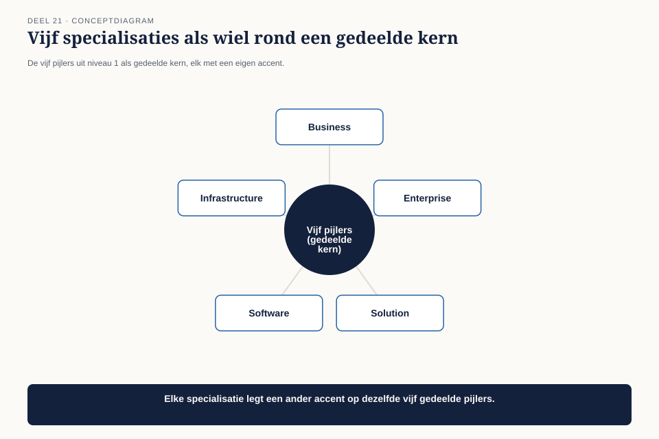
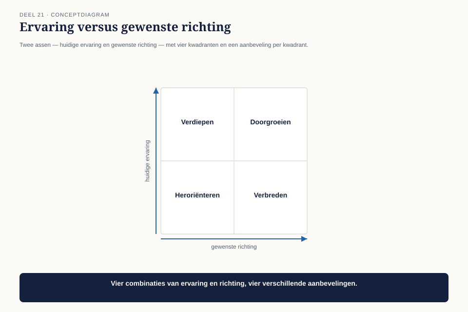

Deel 21 — Specialisatiekeuze
Slidedeck · Ductus-cursus BTABoK · Niveau 2 · deel 21 van 30 · 23 slides
Slide 1 — Titel: Specialisatiekeuze
Deel 21
Ductus
Slide 2 — Agenda: Vandaag
- Drie architecten, drie sporen
- De vijf specialisaties
- De specialisatie-fit-toets
- Wanneer de keuze niet vanzelf spreekt
- De keuzes van de drie architecten
Slide 3 — Sectie: 1. Drie architecten, drie sporen
Slide 4 — Figuur: Zelfde titel, ander werk

Slide 5 — Bullets: Veertien maanden, drie patronen
- Claudette: klantreizen, koppelvlakken, waardestromen
- Collega 1: datamodellen, gegevenskwaliteit
- Collega 2: infrastructuur, schaalbaarheid, deployment
Slide 6 — Statement: Niemand deed iets fout
Ze deden alle drie waardevol werk — alleen ander werk
Slide 7 — Sectie: 2. De vijf specialisaties
Slide 8 — Figuur: Eén wiel, vijf accenten

Slide 9 — Tabel: Kort gekarakteriseerd
| Spoor | Accent |
|---|---|
| Solution | verbindend, cross-team |
| Business | strategie-aansluiting |
| Information | data |
| Infrastructure | platform |
| Software | componenten, code |
Slide 10 — Statement: Zelfde vijf pijlers
Het verschil zit in waar je ze het diepst toepast
Slide 11 — Sectie: 3. De specialisatie-fit-toets
Slide 12 — Figuur: De toets

Slide 13 — Bullets: Bij Claudette
- Solution 55% · Business 20%
- Information 10% · Infrastructure 10% · Software 5%
- Eenduidig antwoord
Slide 14 — Opdracht: Opdracht 1 — De specialisatie-fit-toets
20 minuten, individueel
Vijf percentages · optellen tot 100%
Slide 15 — Sectie: 4. Wanneer de keuze niet vanzelf spreekt
Slide 16 — Figuur: Ervaring × richting

Slide 17 — Statement: CITA-A is geen beloning voor wat je al deed
Een investering in een richting
Slide 18 — Opdracht: Opdracht 2 — Ervaring versus richting
15 minuten, tweetallen
Welk kwadrant? Wat betekent dat?
Slide 19 — Opdracht: Opdracht 3 — Twee specialisaties naast elkaar
15 minuten, individueel
Concrete voorbeelden, geen definities
Slide 20 — Sectie: 5. De keuzes
Slide 21 — Bullets: Drie architecten, drie besluiten
- Claudette → Solution (bevestiging)
- Collega 1 → Information (bewuste keuze, niet toeval)
- Collega 2 → Infrastructure (bevestiging)
- Niemand kiest Business of Software — niet minder waard, gewoon niet passend hier
Slide 22 — Opdracht: Opdracht 4 — Je eigen keuze onderbouwen
15 minuten, individueel
Max. 100 woorden, in besluitenlogboek-stijl
Slide 23 — Titel: Volgende keer
Deel 22 — Examentraining CITA-A en portfoliobeoordeling
De afsluiting van niveau 2.